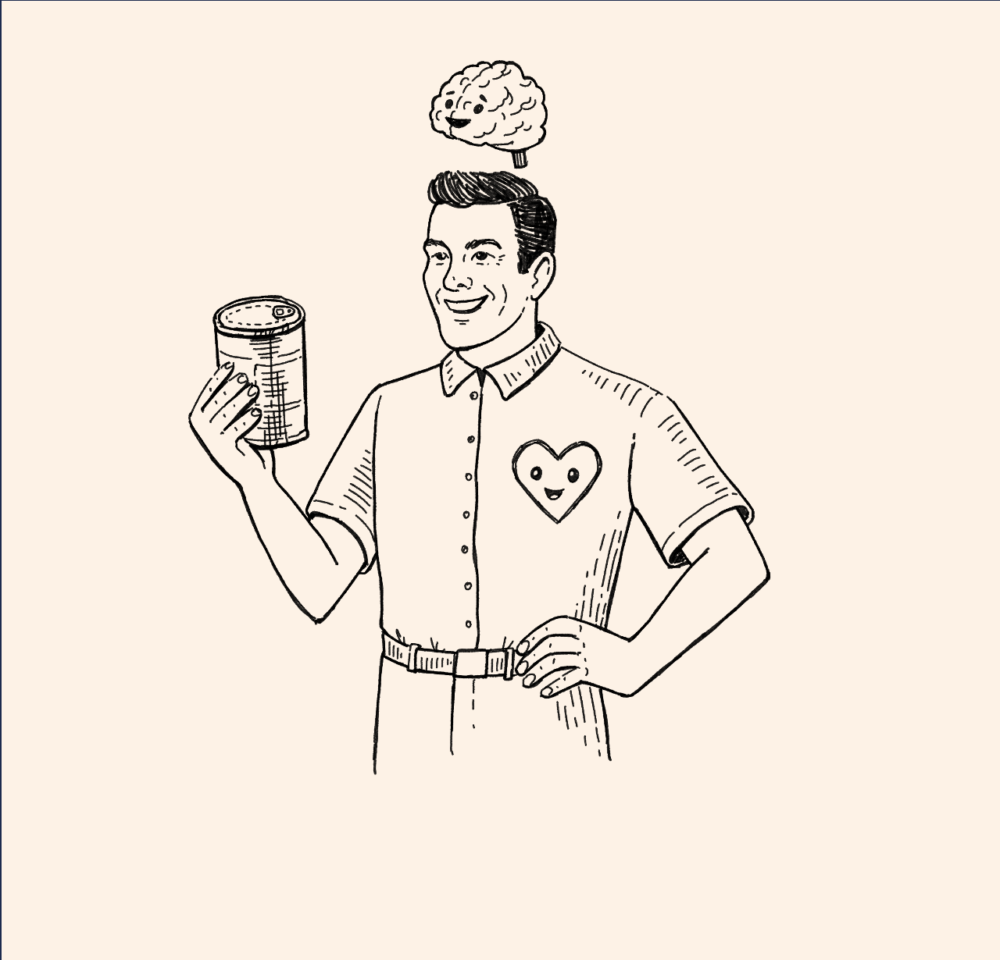
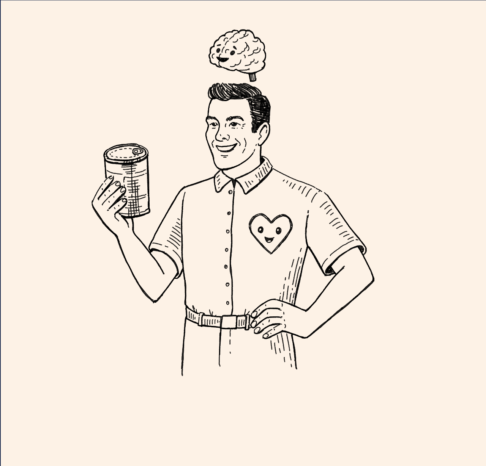
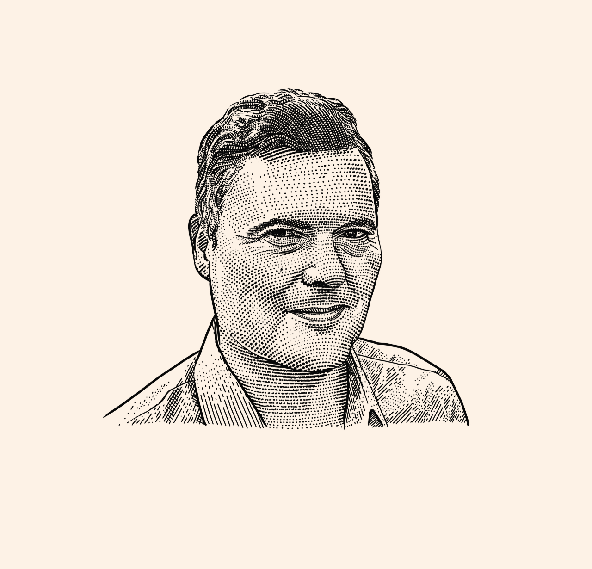
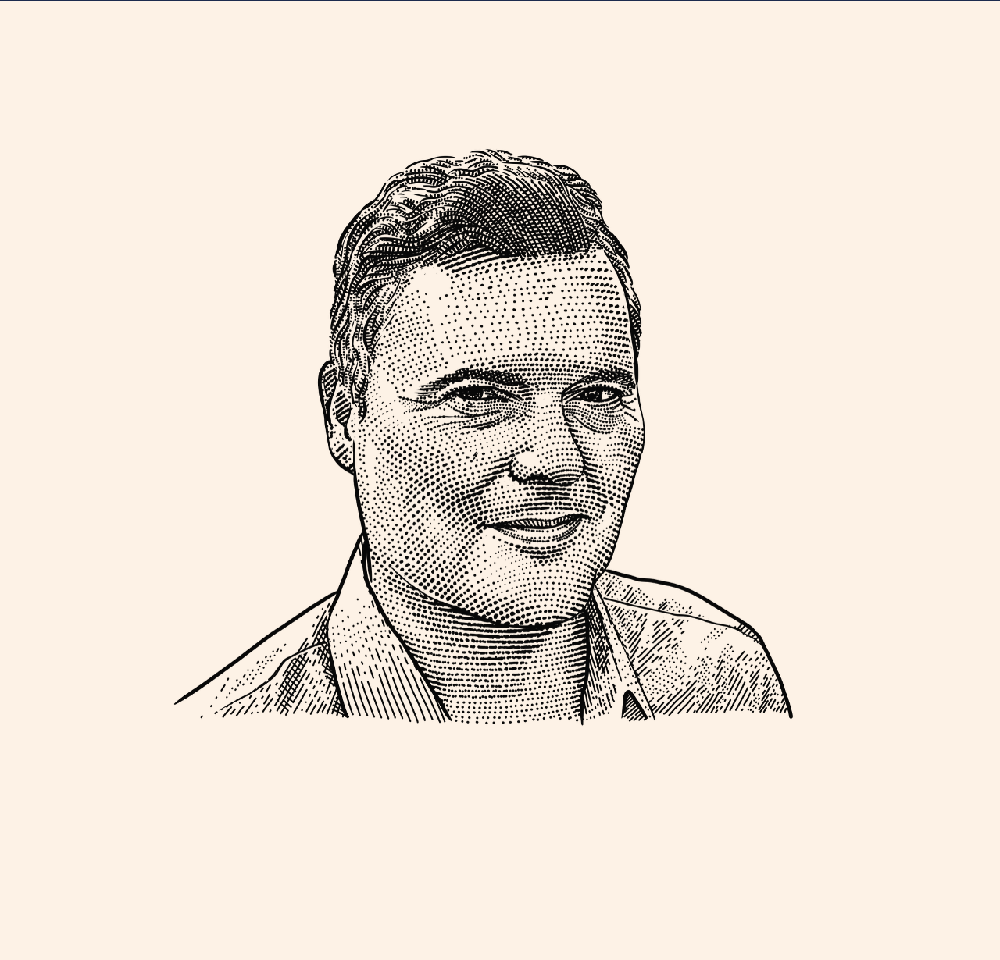

Thanks for checking in...click to read more
I am an associate professor of marketing at the
University of Arizona
with affiliations in psychology, cognitive science, and veterinary medicine;
the director of the
Arizona Think Tank for Behavioral Decision Making; and an external faculty affiliate at
Stanford University's Institute for Research in the Social Sciences (IRiSS).
My research broadly deals with the ways consumers strive for desirable
entities (humans, products, pets, AIs), how they feel about these entities,
and whether their actions will lead to outcomes such as product
purchases or new relationships.
In one stream of research, I examine affective drivers of consumer
decision making. This work spans from the study of desire, curiosity,
hope, pride, and love to anger, pain, guilt, and shame as
predictors of judgment and choice.
Another central theme of my work is trust—specifically, how trust shapes decision making
and the dynamics of trust that emerge in people’s relations with other humans,
products, pets, and artificial intelligence.
Important to me is to study consumers through the lens of different
methods, including asking them about their opinions, attitudes, and
feelings, measuring their neurophysiological responses, and observing
their behavior. I utilize surveys, fMRI, and behavioral experiments to do so.
Check out some tools for designing
surveys as well as
conducting and
interpreting functional neuroimaging studies in marketing, as well as materials and data on
OSF. Read more about me and my work on my
faculty webpage. Prospective students feel free to e-mail me.


 



 
